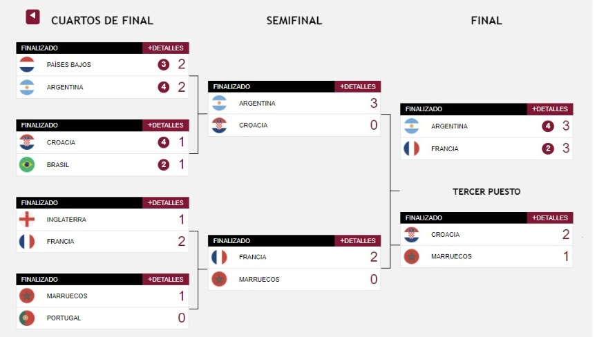

Fecha y horario de la final del Mundial de Qatar 2022
La edición 22 de la Copa del Mundo de la FIFA llega a su final este domingo 18 de diciembre. Argentina y Francia pelearán por el título en el estadio Lusail.
El Mundial de Qatar se termina este domingo 28 de noviembre de 2022. La final la jugarán las selecciones de Argentina y Francia, en un partido que se presenta como impredecible y apasionante, por la calidad de los jugadores.
Lionel Messi vs. Kylian Mbappé, Emiliano Martínez vs. Hugo Lloris, Lionel Scaloni vs. Didier Deschamps, son algunos de los duelos que veremos en el estadio Lusail. Esta es la fecha y el horario del partido:
Argentina vs. Francia
Domingo 18 de diciembre 10:00 (hora de Ecuador) Estadio Lusail
Mientras que el tercer lugar se lo llevó Croacia luego de derrotar 2-1 a Marruecos, en el estadio Khalifa Internacional.
